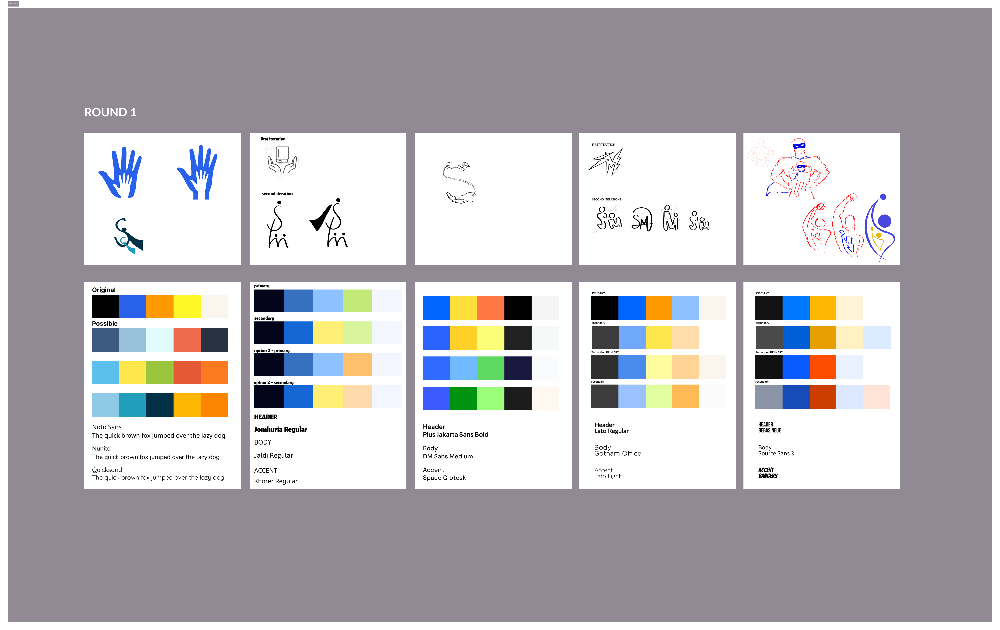
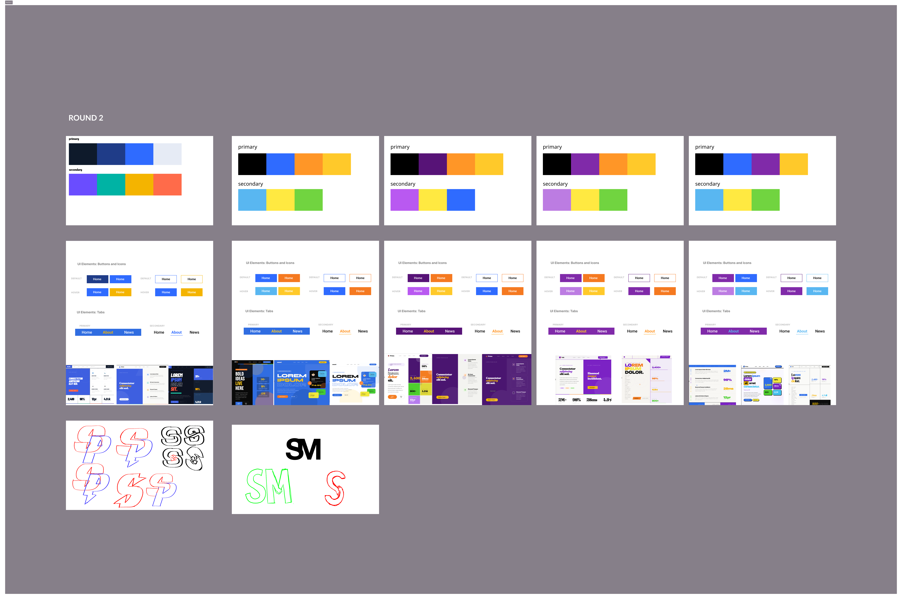

Relate. Empower. Transform.
Superpower Mentors needed a brand and website that could speak to three very different audiences at once: parents of neurodivergent students, prospective mentors, and partner schools. The existing identity felt safe and generic, we needed to make it expressive and hopeful.
As UX Design Lead and Stakeholder Liaison, I led the design direction across the full project, from weekly client meetings through lo-fi wireframes, iteration cycles, mentoring junior designers through work sessions, and final high-fidelity delivery.
Connecting students with mentors who actually get them.
Superpower Mentors connects neurodivergent students with relatable mentors and role models who understand their unique challenges, helping them discover their own strengths and find their path forward.
The platform serves students ages 7-14 across neurodiversity, transitions, confidence, and direction, matching kids and teens with mentors who've walked a similar road and can show them what's possible.
Superpower Mentors reduced freshman dropout rates by 30% to 0% for students in their program , we're seeing real impact, real numbers.
Safe and generic to expressive and hopeful.
Weekly client meetings with the Superpower Mentors founder shaped our understanding of the brief. Two parallel tracks emerged: the brand needed to connect through storytelling and build trust, while the website needed to create a clear, distinct path for each audience.
Weekly client meetings, constant iteration.
The process was structured around weekly client syncs — presenting progress, collecting feedback, and iterating in real time. This kept the work grounded in actual client needs rather than assumptions.
We moved from user flows and site mapping through lo-fi wireframes across all six pages, collecting design critiques at each stage before committing to high-fidelity.

Multiple rounds, one design system.
We explored five distinct logo directions, from hand-illustrated figures to abstract marks, before landing on the final identity. Color palettes went through multiple rounds, moving from the original busy palette toward a focused purple, blue, and gold system. Typography was set across heading, body, and accent roles.
The final design system used primary colors of black, purple, orange, and yellow, with secondary tones in lavender, gold, and blue. UI components were iterated across three rounds before sign-off.



Six pages, one cohesive experience.
The final website brings together every design decision into a live, cohesive experience — bold typography, a warm but energetic color palette, and clear navigation paths for every audience type.

Presented at showcase.
At the end of the semester, we presented the full Superpower Mentors project at the end-of-year showcase, walking stakeholders through the full design process, from initial client briefs through the final live website. The presentation covered brand strategy, UX decisions, wireframe evolution, and the final product.
Leading the design team through weekly client meetings to a polished, client-approved product was one of the most challenging and rewarding experiences of my time at Northeastern.